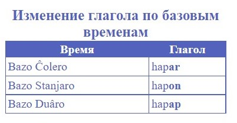

Составлено: Красноярск, 2022 г., Тимофей Горлов
Уровень 0-A1
Глава 1. Алфафит и звуки
|
Aa э |
Bb б |
Cc ц |
Dd д |
Ee и |
Ff ф |
|
Gg г |
Hh х |
Jj ж |
Kk к |
Ll л |
Mm м |
|
Nn н |
Oo о |
Pp п |
Rr р |
Ss с |
Tt т |
|
Uu у |
Vv в |
Xx кс |
Yy й |
Zz з |
Ââ а |
|
Ôô о |
Ûû ю |
Ĉĉ ч |
Ŝŝ з |
` ь |
Расмотри пример звучание слов:
- ĉal [чэл] человек
- boak [боэк] книга
- ulenar [улинэр] весна
Такие буквы как: Â,Ô,Û,Ĉ,Ŝ являются дополнительными. Они модифицируют основную букву и имеют знак ^ над этой буквой. Этот знак называется dokr или же на русском крыша. Главным правилом произношение слов на Стэловском языке, является – как пишется, так и произносится.
Глава 2. Существительное
Существительное в начальной форме не имеет окончания. Например: lang – язык (речь). Отвечает на вопросы кто? что?
Для создания множественного числа к слову нужно прибавить оканчание -s. Например: lang – язык; langs – языки.
Глава 3. Прилагательное
Прилагательное всегда имеет окончание -o. Оно не может изменятся в числе, число определяется по существительному.
Loango ĉal – большой человек
Loango ĉals - большие люди
Глава 3. Глагол
Глагол имеет начальную форму, при которой слово имеет окончание -e.
sale - кричать
Именно в такой форме глаголы в словаре.
Глава 6.1 Глагол и времена
Существует три основных времени, давайте посмотрим таблицу.
| Время | Перевод | Оканчание | Описание | Пример |
|---|---|---|---|---|
| Bazo Ĉolero | Основное прошлое (прошедшее) | -ar | Описывает то что уже произошло | salar - кричал |
| Bazo Stanjaro | Основное Стандартное (настоящие) | -on | Описывает то что происходит на данный момент | salon - кричит |
| Bazo Duâro | Основное будущие (будущее) | -ap | Описывает то что произойдет в будущем. | salap - закричит |
Глава 7. Личные местоимения
Личные местоимения служат для замены имени на короткое слово, бывает всего три формы личных местоимений давайте посмотрим на таблицу.
| Первая форма | Вторая форма | Третья форма |
|---|---|---|
| Ja - я | Jal - мне | Jam - мой |
| Ze - мы | Zel - нам | Zem - наш |
| Ert - ты | Ertl - тебе | Ertm - твой |
| Ort - вы | Ortl - вам | Ortm - ваш |
| He - он | Hel - ему | Hem - его |
| Ha - она | Hal - ей | Ham - её |
| Ho - оно | Hol - ему | Hom - его |
| Are - они | Arel - им | Arem - их |
Каждая форма личных местоимений отвечаю на свои вопросы:
Первая - кто? что?
Вторая - кому? чему?
Третья - чей?
И имеет соответствующие оканчания:
Первая - нет.
Вторая - l
Третья - m
Глава 7.1. Возвратные местоимения
Это местоимения которые указывают на сам объект который совершает действие.
lun - сам, сама, само, себе
lunr - свой, своя, своё
Пример:
Ja lun - я сам
Dokr lun dâunar - Крыша сама упала
Глава 7.2. Указательные местоимения
Они указывают на объект, за указательным местоимением обычно стоит определяемое им существительное.
zat - это, эта, этот, тот, та, то (иногда: так)
zats - эти, те
azat - другой, другая, другое
azats - другие
К указательному местоимению также можно прибавлять окончание -s. Таким образом образуется zats - эти.
Zats chals calon. - эти люди кричат.
Глава 7.3. Вопросительные местоимения
Кроме личных местоимений, бывают и другие, например вопросительные, они используются в вопросительных предложениях.
Klo - кто, который
Kle - что
Klu - как
klum - какой, какая, какое
Klar - где
Klan - куда
Klem - чей
Role - почему
Tam - когда
Numar - сколько
Глава 7.4. Дополнительные местоимения
Это те местоимения которые используют не так часто но знать их тоже надо. Все они имеют аналоги в английском, русском и других языках, но в стэловском они помечены как дополнительные, потому что используют их не все. Необязательно запоминать всю эту таблицу, выберите те дополнительные местоимения которые вам нужны и запомните их первыми.
|
der кто-то кто-либо кое-кто некто |
dar что-то что-либо чое-кто нечто |
klum-zat какой-то какая-то какое-то кое-какой кое-какая кое-какое |
|
klar-zat где-то где-либо где-нибудь |
klan-zat куда-то куда-либо куда-нибудь |
klen-zat чей-то чей-либо чей-нибудь |
|
role-zat почему-то почему-либо почему-нибудь |
numar-zat сколько-то сколько-нибудь некоторое количество |
arj такой, такая, такое |
|
kla там |
olâ все, всё |
tam-ola всегда, всё время |
|
Ne klo никто |
Ne kle ничто |
Ne klu никак |
|
Ne klar нигде |
Ne klan никуда |
Ne tam никогда |
|
Zat-klu так как |
Klar-zat kla hapon ĉals. - Где-то там есть люди.
Глава 8. Предлоги
Предлог - это служебное слово, которое стоит перед существительным или местоимением.
ul - по
ulm - под
en - в
at - на
atm - над
ele - для
tu - к
reen - из, от
a - о (ком-то)
ve - с (кем-то)
zon - за
u - у (кого)
pre - до
aft - после
Пример:
He volkon tu maŝen.
Он идёт к машине.
Ha volkon ve fraends.
Она идёт с друзьями.
Глава 9. Союзы
Союз - служебное слово, которое используется для связи частей сложного предложения. Все союзы будут представлены в виде таблицы. Цветом от красного до зелёного помечается, то на сколько их используют.
el - и
bat - но, а
or - или
vetam - с того времени, с тех пор как
ef - если
klu-brovep - как-будто
baloc - потому что
totm - хотя
ĉel - чем
preobj - до, до того как
aftobj - после, после того как
entam - во время того как
zatobj - тот же, так же, такой же
elekle - чтобы, для того чтобы
Глава 10. Предложения
Положительные
He volkar en bânk.
Он ходил в банк.
Это самый просто вид, используется когда мы сообщаем о чём-то.
Отрицательные
He ne volkar en bânk.
Он не ходил в банк.
Используется когда мы сообщем о чём-то что не происходило. Ne - это отрицание (не, ни).
Вопросительные
He volkar en bânk?
Он ходил в банк?
Используется когда мы задаём вопрос. Также можем ответить на него:
nel - нет
yar - да
Пример диалога:
- Ert volkar tu olsmâm?
- Yar.
- En numar?
- En andor hor troe.
- Guda. U ham vasar apal`s?
- Nel. U ham ne vasar apal`s.
- Ты ходил к бабушке?
- Да.
- Во сколько?
- В 9:03.
- Хорошо. У неё были апельсины?
- Нет. У неё не было апельсинов.
Глава 11. Количественные числительные
Это слова, которые обозначают количество предметов и отвечающие на вопрос “сколько?”.
nul - ноль
roa - один
dur - два
troe - три
vur - четыре
onjor - пять
sel - шесть
salan - семь
uton - восемь
andor - девять
Также существуют постлоги (пишутся после слова) числительных:
sat - десять
tel - сто
kol - тысяча
mel - миллион
При их помощи можно составить любое число:
dur sat - (дважды по десять) двадцать
dur tel - (дважды по сотни) двести
dur kol - (дважды по тысячи) две тысячи
dur tel kol - (сто+тысяча+два) двести тысяч
dur telkol - (сто+тысяча+два) двести тысяч
Если используется больше одного постлога, то их можно объединить их, просто убрав пробел.
Пример сложного числительного:
dur kol troe tel endor sat endor = 2399
два по тысячи три по сто девять по десятку девять = 2399
Глава 12. Порядковые числительные
Это слова, которые обозначают порядок предметов при счёте и отвечающие на вопрос “который?”.
Для образования порядкового числительного требуется добавить окончание -z. Например:
troe - три
troez - третий
troez satz - тридцатый
Если числительное сложное то -z прибавляется ко всем частям.
Практика A1
Даты, время

Транспорт
Встроенные глаголы
Возмём уже знакомое сущетсвительное matrol и состаим предложение:
tranôl at matrol - ездить на метро
И мы можем сократить это предложение использую встроенный глагол, как мы знаем в стэловсокм языке от любого сущетвительного можно образовать любую другую часть речи, мы этим и воспользуемя:
matrole - ездить на метро
Перевести дословно на русский не получится и наче получется что-то очень странное, но при этом смысл этого глаголо очень понятен.
Dâper "hape" (Глагол "иметь")
Вот так он изменяется по временам:

Переводиться он может как: иметь, есть.
Примеры:
Ja hapar dur-boguo kfatr.
Я имел двух комнатную квартиру.
He hapon onjor bo`l`us
Он имеет пять кошек.
Dâper "vase" (Глагол "быть, являться")
Его очень редко используют для настоящего времени, но при этом для будущего и прошлого, он просто незаменим.
Примеры:
Ja programest = Ja vason programect.
He vasap programect. - Он будет программистом.
He vasar programect. - Он был программистом.
Ulenar (Весна)
Прочитайте, попробуйте понять смысл и прослушайте
Tu zel ulenar volkon
Fasto volk.
el bokans zavon
Ulm ham lags.
Bloako zavs
At provans vezuanon.
Traxa, vuren vorno.
Lags ulenar.
E.P Tokmâkovâ
Перевод
К нам весна шагает
Быстрыми шагами.
И сугробы тают
Под её ногами.
Чёрные проталины
На полях видны.
Верно, очень тёплые
Ноги у весны.
Manul en caf (Меню в кафе)
Прослушайте аудиозапись, и выполните задания
1) Сопоставьте цену и блюдо
- sâp salankâ
- sâp pûro
- potato pûro ve pomeders
- 100 рублей
- 200 рублей
- 90 рублей
2) Сопоставьте блюдо и количество этих блюд
- sâp salankâ
- sâp pûro
- potato pûro ve pomeders
- имеется 9
- имеется 10
- имеется 2
Resevuâr trojan (Прибытие поезда)
Прослушайте аудиозапись, и выполните задания
1) Заполните пропуски.
Trojan numer _______ resevuârap at ____ pâs en __________ FD.
2) Заполните пропуски.
Поезд номер _______ прибудет на ____ путь в __:__ вечера.
Taxt a Mâreâ(Тект о Марии)
Прослушайте аудиозапись, и выполните задания
1) Заполните пропуски.
Mâreâ hapon ___ velôk.
Mâreâ __ hapon _______.
Mâreâ _____ mancenest.
Ha ____ programest.
__ __ amon taxmaŝe.
2) Встаьте недостающие слова
Мария имеет ____ ____.
Мария __ имеет ______.
Мария _____ врачом.
Она ____ программистом.
__ __ любит ездить на ______.
Устойчивые фразы и выражения
В стэловском языке есть некоторые выражения, которые имеют переносный смысл
aftdaz-lôrel` (затра утром) = Ne tam (никогда)
hapon en hap = иметь в наличии
Также имеются выражения которые очень часто используются в речи
el zat kle... = да так что...
Klu doprjâns? = Как дела?
Kle dopron? = Что делаешь?
Kle amon? = Что любишь?
Klan volkon? = Куда идёшь?
Reen klan volkon? = От куда идёшь?
Klum sodert? = Какая обстановка? Какая ситуация?
Tam matere? = Когда засыпаешь? Когда ложишся спать?
Kle baye? = Что купить?
Klu volkon tu ...? = Как дойти к ...? Как дойти до ...?
Kle kulenâron? = Что приготовить?
Tam tranôlap? = Когда поедем?
Kle ĉalvezon? = Что одеть?
en fou = в общем
ul jam muâl = по поему мнению
ОТВЕТЫ
Manul en caf: 1) 1-a; 2-c; 3-b; 2) 1-c; 2-a; 3-b;
Resevuâr trojan: 1)dur sat; troez; sel hor troe sat; 2) двадцать; третий; 6:30
Taxt a Mâreâ:1) roa; ne; lopaer; vasar; vason; Ha; ne; 2) один велосипед; не; вертолёт; была; является; Она; не; такси;